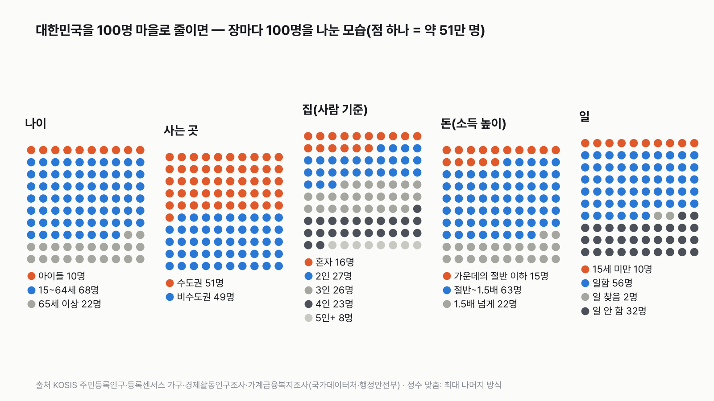
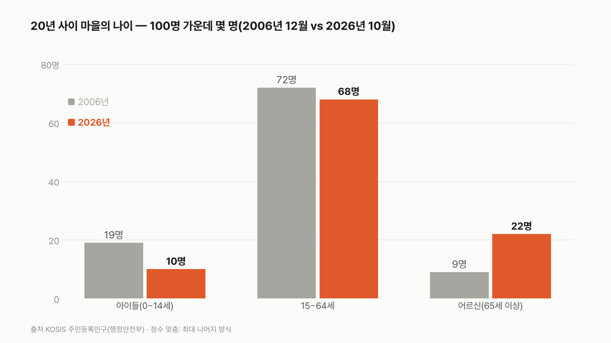
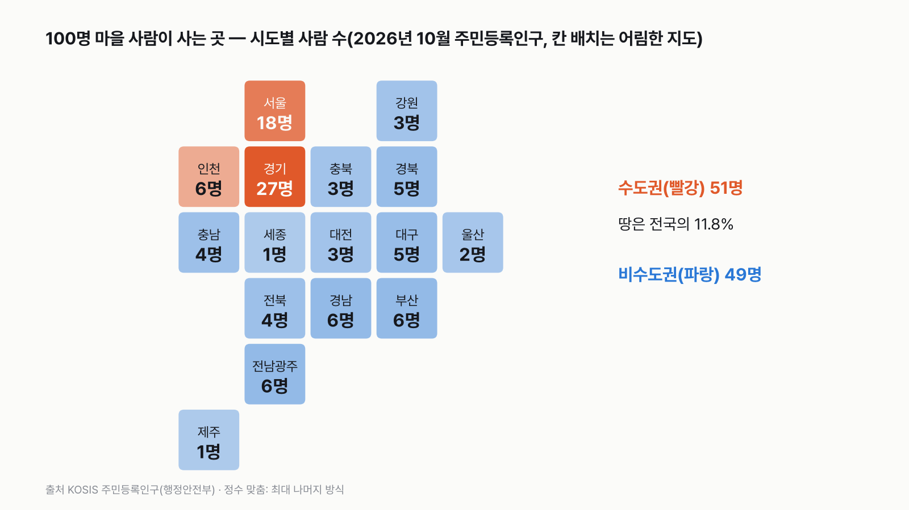
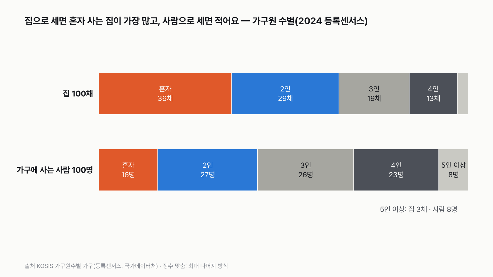
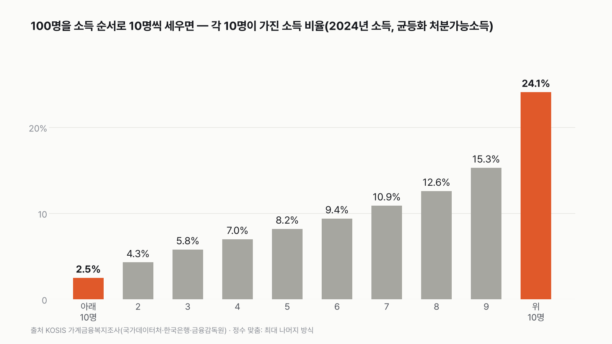
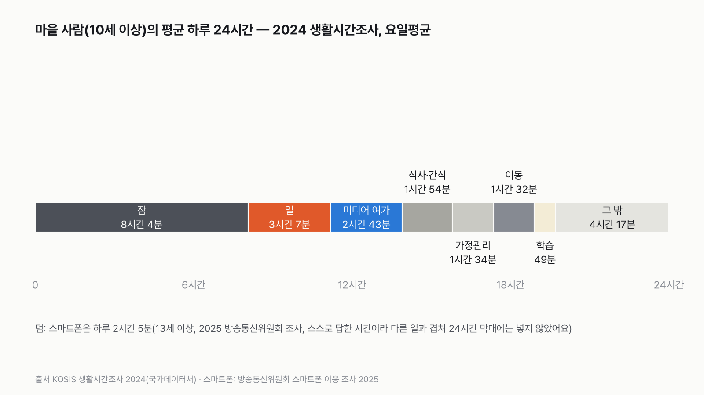

대한민국이 100명이 사는 마을이라면
큰 숫자는 잘 와닿지 않아요. 100명으로 줄이면 "내가 이 마을의 누구인지"가 보여요.

- 대한민국 5,108만 명을 100명 마을로 줄이면, 마을 사람 1명이 실제로는 약 51만 명이에요.
- 이 마을에는 어르신이 22명, 아이들이 10명이에요. 20년 전 마을은 아이들 19명, 어르신 9명이었어요.
- 마을 사람 51명은 땅의 11.8%뿐인 수도권에 살고, 집 기준으로 가장 흔한 집은 혼자 사는 집이에요.
오프닝: 마을 사람 1명은 약 51만 명
대한민국 인구는 2026년 10월 5,107만 5,282명이에요. 100명 마을에서 한 사람은 약 51만 명을 나타내요. 마을에 한 사람이 더 오거나 떠나면, 실제로는 51만 명이 움직인 것과 같아요.
1장 나이: 어르신이 아이들의 두 배가 넘어요
| 묶음 | 마을(명) | 실제 인구 |
|---|---|---|
| 아이들(0~14세) | 10 | 5,101,441명 |
| 일하는 나이(15~64세) | 68 | 34,623,586명 |
| 어르신(65세 이상) | 22 | 11,350,255명 |
| 20년 전(2006년 12월): 아이들 / 15~64세 / 어르신 | 19 / 72 / 9 | 899.9만 / 3,543.6만 / 455.7만 명 |
마을에는 어르신이 22명, 아이들이 10명이에요. 20년 전 마을에는 아이들이 19명, 어르신이 9명이었어요. 20년 사이에 자리가 바뀌었어요. 마을 사람을 나이 순으로 줄 세웠을 때 가운데 사람의 나이도 35.7세에서 48.0세로 12살 넘게 많아졌어요(5세 묶음으로 계산한 어림값이에요).
10살 단위로 보면 가장 많은 건 50대(17명)와 60대(16명)예요. 0~9세는 5명, 70세 이상은 14명이에요. 저도 숫자를 세어 보기 전에는 아이들과 어르신 차이가 이렇게 크게 벌어진 줄 몰랐어요.

2장 사는 곳: 땅은 11.8%인데 사람은 51명이 수도권에 살아요
| 묶음 | 마을(명) | 실제 인구 |
|---|---|---|
| 수도권(서울·인천·경기) | 51 | 26,125,330명 |
| 비수도권 | 49 | 24,949,952명 |
| 그중 4개 광역시(부산·대구·대전·울산) | 16 | 8,100,690명 |
| 그중 그 외(세종·전남광주·6개 도·제주) | 33 | 16,849,262명 |

마을 사람 절반이 넘는 51명이 수도권에 살아요. 수도권 땅은 전국의 11.8%예요. 시도별로는 경기도가 27명으로 가장 많고, 서울이 18명이에요. 서울과 경기 두 곳에만 45명이 모여 있어요. 반대로 세종과 제주는 1명씩이에요.
2026년 7월부터 광주광역시와 전라남도가 '전남광주통합특별시'로 합쳐졌어요. 그래서 이 글의 광역시는 4곳이고, 전남광주는 마을 사람 6명이 사는 곳이에요. 비수도권 그 외 묶음의 도는 강원·충북·충남·전북·경북·경남 6곳이에요.
3장 집: 가장 흔한 집은 혼자 사는 집이에요
| 가구원 수 | 집 100채 중(문패 기준) | 사람 100명 중 | 실제 가구 수 |
|---|---|---|---|
| 혼자 | 36채 | 16명 | 8,044,845가구 |
| 2인 | 29채 | 27명 | 6,474,501가구 |
| 3인 | 19채 | 26명 | 4,201,334가구 |
| 4인 | 13채 | 23명 | 2,838,331가구 |
| 5인 이상 | 3채 | 8명 | 732,781가구 |

문패를 단 집 100채를 세면 혼자 사는 집이 36채로 가장 많아요. 4인 가구 집(13채)의 세 배 가까이 돼요. 그런데 집에 사는 사람 100명을 세면 이야기가 달라요. 혼자 사는 사람은 16명이고, 3인·4인 가구에 사는 사람이 합쳐서 49명이에요. 큰 집 한 채에 여러 사람이 살아서 집 수와 사람 수가 다르게 보여요. 한 집 평균은 2.19명이에요.
4장 돈: 마을 돈 100만 원 중 위 10명이 24만 원, 아래 10명이 2.5만 원
| 소득 높이(2024년 소득) | 마을(명) | 실제 비율 |
|---|---|---|
| 가운데 사람 소득의 절반 이하 | 15 | 15.3% |
| 절반~1.5배 | 63 | 62.6% |
| 1.5배 넘게 | 22 | 22.1% |
| 소득 순서로 10명씩(아래부터) | 1 | 2 | 3 | 4 | 5 | 6 | 7 | 8 | 9 | 10(위) |
|---|---|---|---|---|---|---|---|---|---|---|
| 마을 돈 100만 원 중(만 원, 소수점) | 2.5 | 4.3 | 5.8 | 7.0 | 8.2 | 9.4 | 10.9 | 12.6 | 15.3 | 24.1 |
| 1만 원 동전 100개로(정수) | 3 | 4 | 6 | 7 | 8 | 9 | 11 | 13 | 15 | 24 |

마을 사람 100명을 소득 순서로 한 줄로 세우면, 한가운데 사람은 1년에 3,932만 원을 써요(가구원 수로 맞추고 세금 등을 뺀 소득). 마을 소득 전체를 100만 원으로 줄이면 위 10명이 24.1만 원, 아래 10명이 2.5만 원을 가져요. 위 10명의 평균 소득(1억 785만 원)은 아래 10명(1,112만 원)의 9.7배예요. 10명씩 묶음마다 사람 수가 같다고 본 어림이에요.
가운데 사람 소득의 절반이 안 되는 사람은 마을 100명 중 15명이에요. 65세 이상만 보면 35.9%가 여기에 들어요.
5장 일: 일하는 56명 중 11명이 사장님, 그중 8명은 혼자 일해요
| 마을 100명 | 마을(명) |
|---|---|
| 15세 미만 | 10 |
| 일하는 사람 | 56 |
| 일을 찾는 사람 | 2 |
| 일하지도 찾지도 않는 사람 | 32 |
| 일하는 56명의 일하는 방식(2025) | 명 | 일하는 56명의 산업(2024년 비율) | 명 |
|---|---|---|---|
| 1년 넘게 계약한 직원 | 32 | 제조업 | 9 |
| 1개월~1년 계약 직원 | 9 | 도소매 | 6 |
| 1개월이 안 되는 일 | 2 | 보건·사회복지 | 6 |
| 직원을 둔 사장님 | 3 | 숙박·음식점 | 4 |
| 혼자 일하는 사장님 | 8 | 건설 | 4 |
| 가족 일을 돈 안 받고 돕는 사람 | 2 | 교육 | 4 |
| 농림어업 | 3 | ||
| 그 외 서비스업 등 | 20 |
마을 사람 가운데 일하는 사람은 56명이에요. 그중 11명이 사장님인데, 8명은 직원 없이 혼자 일하고 직원을 둔 사장님은 3명이에요. 산업으로는 제조업이 9명으로 가장 많아요. 산업 비율은 이 표의 최신 값인 2024년 것이에요.
출퇴근 같은 일 관련 이동을 한 날에는 오가는 데 평균 1시간 26분이 걸렸어요. 10세 이상 마을 사람 가운데 그날 일 관련 이동을 한 사람은 44.5%예요.
6장 하루: 지금 이 순간 마을 100명 중 34명은 자는 중
| 10세 이상 한 사람의 평균 하루(2024) | 시간 | 지금 이 순간 100명 중 |
|---|---|---|
| 잠 | 8시간 4분 | 34명 |
| 일 | 3시간 7분 | 13명 |
| 미디어로 보내는 여가(TV·영상·인터넷 등) | 2시간 43분 | 11명 |
| 식사·간식 | 1시간 54분 | 8명 |
| 가정관리(요리·청소·장보기 등) | 1시간 34분 | 7명 |
| 이동 | 1시간 32분 | 6명 |
| 학습 | 49분 | 3명 |
| 그 밖(씻기·교제·운동·돌봄 등) | 4시간 17분 | 18명 |
| 덤: 스마트폰(13세 이상, 2025, 다른 조사) | 안 쓰는 사람까지 넣어 어림 2시간 5분, 쓰는 사람만 2시간 11분 | 넣지 않음 |

하루 24시간을 마을 100명으로 바꾸면, 아무 때나 마을을 내려다봤을 때 34명은 자는 중, 13명은 일하는 중, 11명은 TV나 영상을 보는 중이에요. 하루 평균 시간의 비율을 그대로 사람 수로 바꾼 그림이라, 실제 한밤중이나 한낮과는 달라요.
스마트폰은 다른 조사로 재서 24시간 막대에 넣지 않았어요. 안 쓰는 사람까지 넣어 어림하면 하루 2시간 5분, 쓰는 사람만 보면 2시간 11분이에요. 밥 먹는 시간(1시간 54분)과 거의 같아요.
7장 결혼·출생·반려동물: 2년 달력이 넘어가는 동안 아기 1명, 떠나는 사람 1.4명
한국 전체로는 하루 약 697명이 태어나고 994명이 세상을 떠나요. 하루에 658쌍이 결혼하고 241쌍이 이혼해요(2025년 1년 값을 365일로 나눔). 이 숫자를 5,112만 명 대신 100명으로 줄이면 아래처럼 돼요.
| 마을 100명(2025, 2025년 12월 인구로 나눔) | 마을 | 실제 1년 |
|---|---|---|
| 아기가 태어나요 | 2년에 1명 | 254,341명 |
| 세상을 떠나요 | 2년에 1.4명 | 362,968명 |
| 결혼해요 | 2.1년에 1쌍 | 240,326건 |
| 이혼해요 | 5.8년에 1쌍 | 88,130건 |
| 20년 전(2005) 아기 | 1.1년에 1명 | 438,707명 |
이 마을에서 2년 달력이 넘어가는 동안 아기는 1명 태어나고, 1.4명이 세상을 떠나요. 그래서 마을 인구는 조금씩 줄어요. 20년 전에는 아기 1명이 1.1년마다 태어났어요. 여성 한 명이 평생 낳을 것으로 보는 아이 수는 0.799명이에요. 2025년 출생·사망 값은 이 표에서 2026년 8월 18일에 마지막으로 바뀐 값이라, 확정 수치(출생은 8월 말, 사망은 9월 말 공표)와 조금 다를 수 있어요.
100명 마을에는 개 11마리, 고양이 2마리가 살아요. 이 수는 농식품부 조사의 비율로 이 프로젝트가 어림한 값이에요(고양이를 키운다고 답한 가구는 126가구예요).
반려동물을 키우는 집은 집 100채 중 29채예요.
엔딩: 나는 이 마을 누구일까?
100명 가운데 당신은 어디에 서 있나요? 수도권 51명 가운데 한 명인지, 혼자 사는 16명 가운데 한 명인지, 일하는 56명 가운데 혼자 일하는 사장님 8명 가운데 한 명인지 세어 보세요. 이 마을은 어르신이 아이들의 두 배가 넘고, 절반 넘게가 땅의 12%에 모여 살고, 가장 흔한 집이 혼자 사는 집인 마을이에요.
이 숫자는 어디서 왔나요
출처
기준일 주민등록인구는 2026년 10월, 집은 2024년, 돈은 2024년 소득, 일은 2025년(산업은 2024년 값), 하루 시간은 2024년, 출생·혼인은 2025년, 반려동물은 2025년 조사예요. 모두 2026년 11월 9일에 받은 각 표의 최신 값이에요.
행정안전부
- 행정구역별 5세별 주민등록인구KOSIS DT_1B04005N원본 보기
총인구, 나이, 사는 곳(2026년 10월), 20년 전(2006년 12월)
국가데이터처(면적은 국토교통부 지적통계)
- 인구밀도, 총조사 인구KOSIS DT_1B08024
수도권 땅 넓이 비율(2025)
국가데이터처 등록센서스
- 가구원수별 가구KOSIS DT_1LC0027
혼자 사는 집, 가구원 수(2024)
국가데이터처·한국은행·금융감독원 가계금융복지조사
- 소득분배지표KOSIS DT_1HDALF05
소득 높이, 10분위, 가운데 사람 소득, 65세 이상(2024년 소득)
국가데이터처
- 경제활동인구조사 총괄·종사상지위별·산업별 취업자KOSIS DT_1DA7001S
일하는 사람, 일하는 방식(2025), 산업(2024)
- 생활시간조사 평균시간·행위자 평균시간·행위자비율KOSIS DT_1TS202001
하루 24시간, 출퇴근(2024)
방송통신위원회
- 스마트폰 이용 조사 (공공데이터포털)
스마트폰 이용 시간(2025)
국가데이터처
- 인구동향KOSIS DT_1B8000G원본 보기
출생·사망·혼인·이혼(2025, 2005)
농림축산식품부
- 반려동물 양육 실태조사KOSIS DT_114063_001원본 보기
반려동물 키우는 가구 비율, 개·고양이 수 어림(2025)
어떻게 셌나요
- 마을 사람 1명: 2026년 10월 주민등록인구 51,075,282명을 100으로 나눈 510,753명, 약 51만 명이에요.
- 정수로 맞추는 법: 100명을 나눌 때는 최대 나머지 방식을 썼어요. 각 묶음의 비율에 100을 곱해 소수점 아래를 버리고, 모자란 사람 수만큼 소수점 아래가 큰 묶음부터 1명씩 더했어요. 그래서 묶음마다 합이 꼭 100이에요. 영상의 사람 수도 이 정수 그대로예요.
- 100의 기준이 다른 곳: 3장의 '집 100채', 4장의 '마을 돈 100만 원', 6장의 '하루 24시간', 7장의 '2년 동안 생기는 일'은 사람 100명이 아니에요. 표마다 기준을 적었어요.
- 땅 넓이(2장): 인구밀도 표가 국토교통부 지적통계 면적으로 계산한 값이라, 총조사 인구 ÷ 인구밀도로 시도별 면적을 되돌려 구했어요.
- 돈(4장): 가구 소득을 가구원 수로 맞추고, 세금·보험료를 빼고 나라에서 받은 돈을 더한 '실제로 쓸 수 있는 소득' 기준이에요. 10명씩 묶은 비율은 묶음마다 사람 수가 같다고 본 어림이에요.
- 일(5장): 15세 미만은 1장의 주민등록인구에서, 15세 이상을 나누는 비율은 2025년 경제활동인구조사에서 가져와 이어 붙였어요.
- 출생(7장): 2025년 출생·사망 수를 2025년 12월 주민등록인구로 나눠 마을 100명 기준으로 바꿨어요.
한계 8가지
이 데이터로 말할 수 없는 것
- 장마다 기준 시점이 달라요(2024~2026). 같은 장 안에서는 같은 시점끼리 비교했어요.
- 5장은 주민등록인구와 경제활동인구조사를 이어 붙였어요. 두 자료의 15세 이상 인구는 조금 달라요.
- 2장 땅 넓이는 인구밀도 표에서 되돌려 구한 값이라 지적통계 원표와 소수점 아래가 조금 다를 수 있어요.
- 6장 스마트폰 시간은 다른 조사(스스로 답한 시간)라 24시간 합에 넣지 않았어요. '지금 이 순간 100명'은 하루 평균 비율을 사람 수로 바꾼 것이라 실제 시각별 모습과 달라요.
- 4장 10명씩 묶은 소득 비율은 분위마다 사람 수가 같다고 본 어림이에요.
- 1장 가운데 나이는 5세 묶음 안에 사람이 고르게 있다고 본 어림이에요.
- 반려동물 수는 3,000가구 조사의 비율로 어림한 값이에요. 고양이 표본이 작아요.
- 외국인 등록 인구는 주민등록인구에 들어가지 않아요.
새 글 나오면 받아 보기
피드 리더 앱에 이 사이트 주소를 한 번 넣어 두면, 새 글이 올라올 때 앱에 떠요. 가입이나 메일 주소는 필요 없어요.
받는 법 보기
- 피드 리더 앱을 하나 골라요. 새 글을 모아 보여 주는 앱이에요. 예를 들면 Feedly나 Inoreader가 있어요. 둘 다 무료고 웹·휴대폰에서 써요.
- 앱에서 '구독 추가'(+)를 누르고 아래 주소를 붙여 넣어요.
- 끝이에요. 새 글이 올라오면 앱 목록에 떠요.
https://protofu.github.io/opendata-insight/feed.xmlFeedly를 쓴다면 여기를 눌러 바로 추가할 수도 있어요.